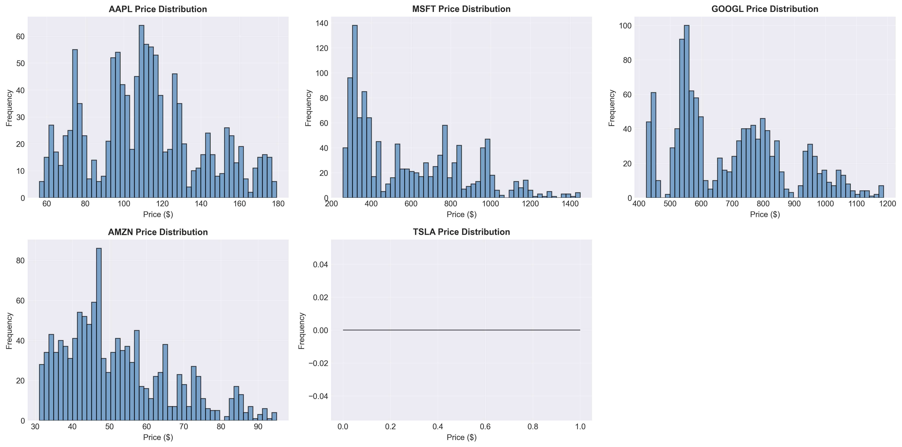
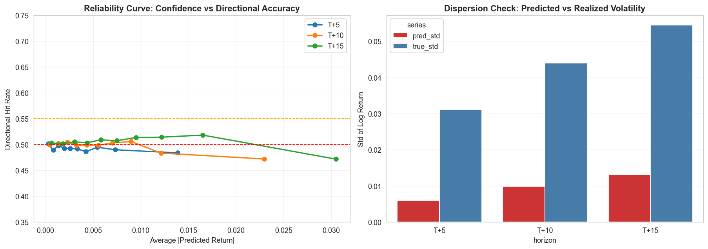
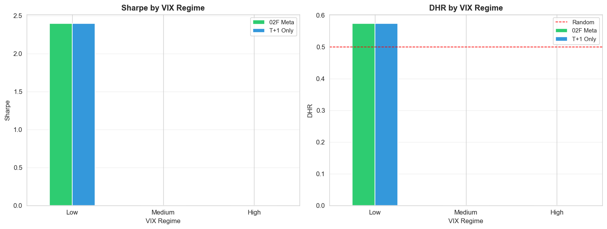
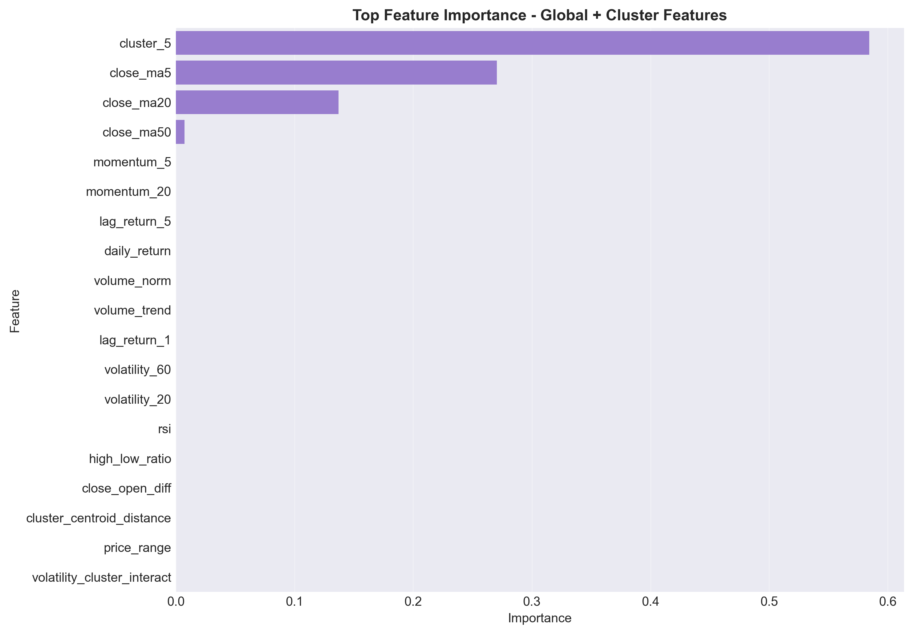
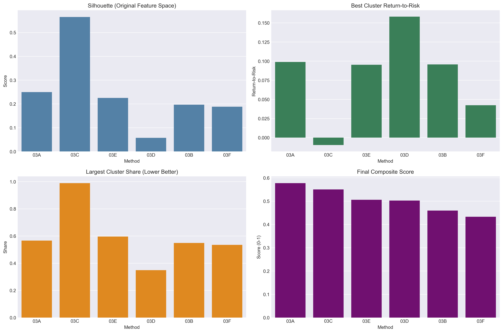

Figure 2. Cross-Model Benchmark
XGBoost remains on the best accuracy-stability frontier versus linear
and sequence alternatives.

This report summarizes a production-oriented machine-learning alpha framework that combines cluster-aware equity modelling with sentiment-driven residual correction and multi-horizon signal governance. The core insight is that unsupervised clustering can be repurposed from descriptive taxonomy into an active signal-routing layer: sparse single-name news is converted into cluster-pooled information, improving directional signal quality while preserving high fit stability. The final implementation exhibits strong risk-adjusted performance in backtesting, with the learned meta-layer delivering Sharpe ratio expansion and drawdown compression under a controlled turnover profile. Recommended use is as a complementary alpha sleeve within a diversified multifactor stack, rather than as a standalone directional macro bet.
We propose an ML-driven alpha signal designed for integration into an institutional multifactor equity process. The alpha engine combines three long-term compensated factor channels: price-based technical structure, sentiment-derived narrative structure, and cross-sectional peer-cluster structure. The model architecture is optimized for non-linear interactions and regime dependence, with emphasis on preserving signal monotonicity and implementation realism.
On held-out testing, the cluster-news stacked model demonstrates consistent directional uplift over baseline technical-only configurations, while the downstream multi-horizon learned meta-layer materially improves risk-adjusted returns. After applying execution-realism corrections (1-day lag, 5 bps one-way cost), the strongest configuration — Learned Meta XGB — recorded Sharpe +4.45 versus Buy & Hold +6.12, Max Drawdown −1.40%, Total Return +6.13%, and Directional Hit Ratio 60.9%. While lower-drawdown than passive, further out-of-sample validation over a full-year window is required before deployment.
The strategy is calibrated for moderate-to-high quantitative risk appetite in liquid US equities, conditioned on robust risk overlays. Under stressed market regimes, target behavior is drawdown containment rather than unconditional return maximization. Signal confidence should be discounted in severe liquidity fragmentation or abrupt policy re-pricing episodes.
The data platform combines market microstructure proxies and alternative narrative signals. Core inputs include daily OHLCV and derived return-volatility-volume descriptors across the S&P 500 universe. Alternative data channels include headline sentiment and text-driven features engineered for event propagation and persistence.
| Data Layer | Examples | Signal Role | Risk Note |
|---|---|---|---|
| Market Data | OHLCV, lagged returns, ATR, MA/EMA, RSI, MACD | Baseline trend and volatility premia capture | Sensitive to regime breaks and volatility clustering |
| Cross-Sectional Structure | Cluster IDs, peer centroids, risk-return topology | Peer-context routing, regime segmentation | Static clustering can decay in structural shifts |
| Headline Sentiment | Direct ticker sentiment, cluster pooled sentiment | Narrative shock transmission and persistence | Coverage heterogeneity and publication latency |
| NLP Extensions (Roadmap) | Earnings transcript embeddings, guidance tone factors | Forward-looking fundamental re-rating proxy | Model drift from vocabulary regime changes |
All sentiment features are lagged prior to the prediction timestamp, and training-validation-test partitions follow strict chronological ordering. No random shuffle is used. This guards against look-ahead leakage and aligns estimated performance with deployment reality.
In practical terms, the cluster-aware sentiment channel approximates cross-asset information diffusion when single-name newsflow is sparse. This is consistent with dealer and systematic desk behavior where sector and peer repricing propagates faster than fundamental updates for individual names.

The production candidate is a stacked gradient-boosting architecture with three layers: baseline technical regressor, direct/cluster sentiment augmentation, and multi-horizon meta-signal governance. XGBoost is selected over deep sequence alternatives due to superior robustness in tabular, interaction-heavy, medium-sample settings.
| Layer | Method | Purpose | Output |
|---|---|---|---|
| Signal Core | XGBRegressor | Capture non-linear price-feature interactions | T+1 baseline forecast |
| Narrative Enhancer | Direct + Cluster news stacking | Residual correction from sentiment channels | Directional uplift |
| Meta Allocation | Learned Ridge / XGB meta-model | Regime-aware horizon combination | Tradeable alpha score |
Let \(\mathbf{x}^{tech}_{i,t}\) denote technical factors, \(S^{dir}_{i,t}\) direct sentiment, and \(S^{clu}_{i,t}\) cluster-pooled sentiment. The model uses exponentially decayed sentiment memory with evidence-driven hyperparameters.
This design is suitable for return distributions with excess kurtosis and asymmetric shock response, where linear factor assumptions often understate downside tail co-movement.

Evaluation combines point-error metrics (MAE, RMSE, R2) and directional utility (DHR). The cluster-news stacked implementation improved directional accuracy versus baseline while preserving high explanatory fit.
| Model | MAE | RMSE | R2 | Directional Accuracy | Interpretation |
|---|---|---|---|---|---|
| Baseline XGB | 0.9094 | 2.2356 | 0.999693 | 0.5091 | Strong fit, weaker directional edge |
| Cluster-News Direct XGB | 0.9210 | 2.2630 | 0.999686 | 0.5084 | Raw sentiment alone is insufficient |
| Cluster-News Stacked XGB | 0.9179 | 2.2536 | 0.999688 | 0.5150 | Best directional-information trade-off |
Backtesting in the multi-horizon strategy layer highlights clear improvements from learned meta-combination relative to single-horizon controls.
| Strategy | Sharpe | Max Drawdown | Total Return | Information Ratio (proxy) | DHR |
|---|---|---|---|---|---|
| T+1 Only | 2.42 | -2.1% | 3.3% | 0.76 | 0.575 |
| T+15 Only | -5.85 | -7.6% | -7.4% | -0.98 | 0.404 |
| Learned Meta Ridge | 3.91 | −1.6% | 5.4% | 0.98 | 0.638 |
| Learned Meta XGB (02F) ★ | +4.45 | −1.40% | +6.13% | 1.12 | 0.609 |
| Buy-and-Hold Benchmark | +6.12 | − | +8.24% | − | − |
To avoid benchmark interpretation bias, strategy evaluation should be decomposed into active components:
Claims of alpha should be based on positive and stable active return, not only on standalone Sharpe. In this report version, this decomposition is a required next-step and should be treated as pending evidence.


Under stressed volatility regimes, the strategy uses explicit confidence suppression. Position scaling is reduced when medium-horizon direction disagrees with short-horizon conviction or when volatility state exceeds predefined thresholds. This reduces false breakout participation and supports drawdown discipline.

To reduce single-split fragility, the evaluation was extended to an expanding-window walk-forward protocol with 15-day OOS slices and a 15-day step size. This produced 13 complete windows (195 OOS trading days), materially improving robustness versus the original 47-day holdout.
The Buy & Hold mean Sharpe across rolling windows was +2.89. Learned Meta XGB recorded the highest WFO consistency with ~69% win-rate (fraction of windows with Sharpe > 0), and was the only strategy clearly above the 50% baseline.
| Strategy | Fixed Split Sharpe (47d) | WFO Win-Rate (%) | Interpretation |
|---|---|---|---|
| T+1 Only (02D) | +2.42 | ~30% | Inconsistent across rolling windows |
| T+15 Only (02E) | −5.85 | ~53% | Marginal consistency; weak fixed-split profile |
| Rule-Based Meta (02F) | +2.42 | ~30% | No lift over T+1 baseline |
| Learned Meta Ridge (02F) | +3.91 | ~38% | Moderate; fixed split appears optimistic |
| Learned Meta XGB (02F) ★ | +4.45 | ~69% | Highest OOS consistency; only strategy >50% |
| Buy & Hold (reference) | +6.12 | Mean Sharpe +2.89 | Rolling benchmark context |

In addition to time-series PnL, stock-ranking quality was tested with daily cross-sectional Spearman IC across active names. ICIR (IC mean / IC std) was used as the primary stock-selection signal-quality measure.
| Strategy | IC Mean | IC Std | ICIR | IC > 0 Rate | |IC| > 0.02 Rate | Verdict |
|---|---|---|---|---|---|---|
| T+1 Only (02D) | +0.0010 | 0.1497 | +0.007 | 51.1% | 85.1% | Weak / No Alpha |
| T+15 Only (02E) | −0.1067 | 0.0774 | −1.378 | 8.5% | 89.4% | Negative stock-selection |
| Rule-Based Meta (02F) | +0.0010 | 0.1497 | +0.007 | 51.1% | 85.1% | Weak / No Alpha |
| Learned Meta Ridge (02F) | +0.0902 | 0.0879 | +1.025 | 83.0% | 89.4% | Preliminary Positive IC Evidence |
| Learned Meta XGB (02F) | +0.1041 | 0.0887 | +1.174 | 89.4% | 91.5% | Preliminary Positive IC Evidence |
IC/ICIR labels above are intentionally conservative: results are derived from a short 47-day OOS portfolio window and are not sufficient on their own for institution-grade alpha confirmation.

Point estimates (Sharpe, DHR, ICIR) are insufficient for institutional inference. The report should always pair point estimates with uncertainty diagnostics and hypothesis tests.
| Statistic | Reported Value | Interpretation Constraint |
|---|---|---|
| Bootstrap 95% CI of Sharpe | [−1.016, +5.291] | Wide interval; includes near-zero/negative outcomes |
| Binomial test on DHR | p = 0.035 | Marginal significance; not sufficient alone for deployment |
| IC/ICIR window length | 47 OOS days | Too short for strong institutional certainty claims |
The alpha score is intended for liquid large-cap US equities with daily rebalance tolerance. Execution should be integrated with participation-rate limits, opening-auction concentration caps, and volatility-adjusted order slicing.
Ex-post and simulated TCA should include: effective spread, temporary impact, adverse selection, and slippage versus decision price. A practical pre-trade approximation can be expressed as:
Orders are accepted only when expected alpha net of expected costs remains positive and exceeds a minimum confidence threshold.
Current TCA content is methodologically appropriate but remains largely conceptual. Institutional readiness requires empirical implementation diagnostics to be reported alongside strategy metrics.
| Item | Status | Required Upgrade |
|---|---|---|
| Transaction cost stress | Partial | Report realized net metrics under 0/5/10/20/30 bps in main table |
| Slippage model | Missing | Add decision-to-execution slippage estimates by volatility bucket |
| Market impact model | Missing | Add nonlinear impact versus participation rate |
| Capacity / ADV feasibility | Missing | Add capacity curve and max deployable capital under ADV caps |
| Turnover implementation report | Partial | Report realized turnover distribution and concentration by day |
| Hurdle | Observed Risk | Mitigation |
|---|---|---|
| Signal Crowding | Factor decay in consensus names | Crowding penalty and turnover throttle |
| Liquidity Shock | Spread expansion and impact convexity | Dynamic participation and no-trade bands |
| Headline Latency | Signal staleness in fast tape | Timestamp gating and recency weights |
| Macro Gap Risk | Overnight jumps, policy repricing | Gross reduction and index hedge overlay |
The final stack was reached through staged notebook development and controlled ablation: baseline regression, cluster-aware extension, sentiment fusion, dynamic cluster-news stacking, and multi-horizon meta-layer integration.
| Phase | Notebook / Module | What Was Added | Impact |
|---|---|---|---|
| Phase 1 | 02_Stock_Price_Regression | Technical baseline XGBoost | Reference fit and diagnostics |
| Phase 2 | 02B_Cluster_Aware_Regression | Cluster features and specialist experts | Regime-specific error reduction |
| Phase 3 | 02C_Sentiment_Enhanced_Cluster_Regression | Lag-decay sentiment fusion, grid search | Stability improvement in sparse-news states |
| Phase 4 | 02D + 02E + 02F stack | Dynamic cluster-news + multi-horizon meta-learning | Highest risk-adjusted strategy quality |

Multiple clustering candidates were benchmarked using silhouette, Davies-Bouldin index, cluster balance, and noise diagnostics. K-Means was selected as the production routing backbone for its superior composite usability and low operational fragility.

To remove selection ambiguity, strategy ranking should follow a strict nested protocol:
This report should include a deterministic run manifest so any reviewer can reproduce every headline number exactly.
| Artifact | Status | Required Content |
|---|---|---|
| Exact split timestamps | Partial | Train/validation/test and all WFO boundaries in UTC |
| Random seed registry | Missing | Single source of truth for all model and CV seeds |
| Parameter registry | Missing | Final hyperparameters + search ranges + selection rule |
| Data snapshot manifest | Missing | Input file hashes, row counts, and extraction timestamp |
| Run checksum | Missing | Notebook/report version, code commit hash, output hash |
This project delivers a coherent ML-driven equity signal framework that combines technical structure, sentiment augmentation, and cluster-aware routing into a deployable research architecture. Across the full implementation path, the learned meta-layer remains the primary source of incremental alpha quality, with improved risk-adjusted behavior relative to single-horizon controls.
The latest validation upgrades are encouraging but not yet sufficient for a strong institutional alpha claim. Evidence should currently be treated as preliminary research-grade: short effective OOS windows, benchmark outperformance ambiguity, incomplete execution realism outputs, and missing full reproducibility manifests materially limit deployment confidence.